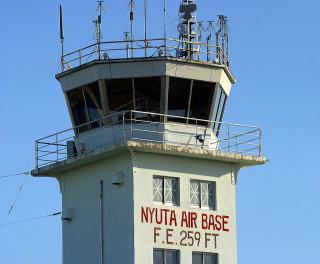
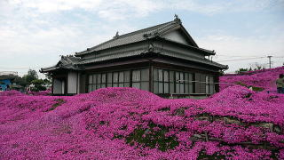

今回第二回目の漢塾、根性屋合同イベントは、元々漢塾が企画していたイベント池田湖イッシー探索よりはじまり漢塾、根性屋の合作での企画となり改め“漢の旅路”というイベント題目となった。今回のこのイベントは５日間というロングイベントとなる。しかし行程はハードな移動を行い詰まった５日間である。この中でも３日目の霧島 高千穂峰山頂登山は限られた時間を使い登るためハードなものとなるが、‘過酷さを味わう’これは漢塾、根性屋の合同イベントにおいてなくてはならないものでもある。漢たちに泣き、漢たちに敬を払い、漢を求める今回のイベント‘漢の旅路’は、単なる行楽旅行とは違う。
‘漢の旅路’総集編
|
 |
 |
 |
 |
|
 |
 |
 |
 |
 |
こうして我々、漢塾、根性屋第二回合同イベント‘漢の旅路’は無事に終了することができた。漢塾塾長、私ともに漢として何が一番大事であるか、ともに感じる旅を得たであろう今回の旅路。西郷隆盛公のように気取らず粋（いき）がらず素直に己を表現できることが私にとって漢というものだと感じたしだいです。

そして今回、私たちの漢の絆もなお深めることができたということ。長い人生にとって五日間というものは、ほんの一瞬であるかもしれないが、短い限られた時間を使い活かすことが今後の人生にどう影響するかを学ばせてくれた旅でもありました。そして今回も漢塾塾長の漢気というものには感心させられることが多々あり見習うべきことがたくさんありました。ありがとうございました。まだまだ真の漢にはほど遠い私ではありますが真の漢に近づける努力をこれからもしてまいります。
後半部（宮崎編）
漢の旅路も終盤を迎えました。最終目的地である宮崎へは、‘漢の旅路’企画内の根性屋宮崎支部との交流、航空自衛隊新田原基地見学とあるが、今回の旅路の疲れと心を癒すために訪れることが本当の目的であるかもしれません。
 |
２０日午前９時３０分過ぎに私たちは霧島神宮を出発し根性屋宮崎支部、航空自衛隊新田原基地のある宮崎県児湯郡新富町へ向かいました。途中昼くらいに綾町に立ち寄り２００６年度までは日本一の歩行用吊橋（現在は大分県 九重‘夢’大吊橋 高さ１７３m）であった照葉大吊橋に寄り渡りました（途中2ヶ所覗き見仕掛けになっている）。高さ１４２ｍ下は谷底です。自殺者が毎年あるだとか・・・ |
| 午後３時過ぎ新富町へ着きました。新富の名所になりつつある新田原基地前にある夢茶房（お茶専門店）さんを通りここから数分とかからない支部交流会を行う私の母方の実家がある平伊倉へと向かう。 夢茶房：前々から気になっていた夢茶房さんへ行きおいしいお茶を購入いたしました！店内は、このど田舎にあわないお洒落できれいな店であり、マスターが入りたてのお茶を勧めてくれました。とても良い感じのお店でありました！ |
 |
 |
実家到着後、隣の町である高鍋町の温泉 めいりんの湯へと旅の疲れを癒しに行きました。連休でお客さんが多かったです。 |
| ここで今回の土産にと漢塾塾長もおススメの唐辛子を和歌山で待つ根性屋メンバーのために購入する。やさしいキャプテンやなぁホンマ！！涙出るわ・・・ |  |
 |
温泉から帰り交流会がさっそくはじまりました。左上よりマウンテン ススム、新入りのファンキー ショウゾウ、ターザン サトシ、あんちゃんマサ、いやぁいつものことながら、ど田舎のローカルでくだらない話しで盛り上りました。話しの中で新富にある名物食堂 幸楽飯店という面白い店があるというこで明日行ってみることにしました。ところで宮崎支部いつから活動するんや！！宴会とかばっかりやなぁホンマ。この後眠りにつく、この地でやっと畳の上で寝ることができました。 |
| ２１日午前１０時〜航空自衛隊新田原基地へ、今回は連休中ということもあり自衛隊のほう休日（資料館 売店も休み）でありました。残念ながら現役戦闘機を見ることができませんでしたが、基地内を一回りし見学を終えました。案内には私の同期である隊員の方が案内してくれました。お忙しいなか無理を言ってすみませんでした、ありがとうございました！ 追伸 この基地と私の係わりは深い、この基地がなければ私はこの世に生まれていなかったかもしれない。そうここは、私の父と母が出会ったところだからだ。父は基地で勤務する隊員であり母は基地内にある理容店で勤めていた。 |
 |
 |
ここが噂の店である幸楽飯店だ。何が面白いか、いやぁ全体でした。先ず 店の看板がないので店なのか民家なのかわからない。駐車場が狭い、また三角形になっていてどう止めていいのかわからない、店の中にメニュー札が四方壁に張りまくっていてざっと１００以上ある。注文をとりにこない（自分から厨房に注文しに行く）。水は自分で注ぎに行く、が凄い勢いで氷がでる（四方八方にこぼれる）ので注意する。一品量が半端でないくらい多い恐らく少食の方は完食できない。定休日が決まっていない。気まぐれに休む。などしかしお客さんは多く繁盛している（しかもほとんどの人が路駐）。肝心の味は、なかなかのものでありました。また皿の大きさにもびっくりしました！いやぁここはハマリました。 |
| そして周辺観光に西都原古墳群へ行ってまいりました。ここは広さ的にも日本では最大といわれている古墳群です。しかしあまりの昔の事（昔過ぎてピンとこない）にワクワクできず、また古墳や土器などにあまり関心がない塾長と私は、早々とここを後にした。いやぁやっぱり幸楽はインパクトありすぎたわ！！ |  |
 |
さて翌日私たちはそれぞれの帰路へと向かうことに、早朝4時に新富を後にした。昨日給油をわすれたので町にある唯一24時間スタンドで給油し西都インターを出発しました。 |
新富町という所

先ずここは、航空自衛隊の町でもあります。航空自衛隊 第五空団新田原（ニュウタバル）基地が所在する地であります。航空自衛隊の最強技量を誇る戦闘機パイロットたちがここに所属する。しかし地元の人たちにとってこの戦闘機の爆音は騒音であり厄介でもある。離陸時、着陸時に戦闘機が真上を通過する母の実家はまさに爆音の家とも言いましょうか、会話、テレビなどまったく聞こえない状態になります。まぁしかしここがあったから私はこの世に誕生したのだということは事実です。爆音は私にとって心の故郷です。

母親の実家からほどなく離れた場所に黒木さんという方の家があります。ここが最近宮崎ではもちろん全国的にも有名になりつつあるという。この黒木さん宅の庭に咲き誇るシバザクラ、家を取り囲むように広い庭一面にシバザクラの花がひろがる。最近は観光客までが訪れるという。
そして最近話題になっている 夢茶房さんのホームページです！
とにかく今回、宮崎支部の面々、またご家族の方々には大変お世話になりました。漢の旅路の最後の締めを宮崎で過ごせてよかったです。叔母ちゃん、ばあちゃん、サトシ、ススム、サトミちゃん、他訪問した皆様方、自衛隊を案内してくれた千手さん、どうもありがとうございました。無事に漢の旅路を終えられたのは、みなさんが温かく出迎えてくれたことにあります。感謝しております！！
後半部（高千穂峰編）
西郷隆盛公の漢気というものをしっかりと見とどけ私たちは漢塾、根性屋のイベントには欠かすことができない過酷さを味わうことの企画事を行うため鹿児島県と宮崎県の県境付近一帯に広がる霧島火山帯へ向かう、ここには、かの坂本龍馬が妻のおりょうとともに登山したという高千穂峰という山がある。龍馬が姉の乙女宛にだした手紙によりますとこの間は山坂、焼け石ばかり。男でも登りにくく、例えようもないくらい危ない路。焼け土はさらさらで、少し泣きそうになる。五丁（約６００ｍ）も登れば、履物（わらじ）が切れます・・・と更に・・・この穴は火山の跡です。直径は三町（３５０ｍ）ばかりあり、すり鉢のようで、下を見ると恐ろしいようです。この間はあの‘馬の背越え’（噴火口の縁）です。なるほど、左右目が届かぬくらい下がかすんでいます。あまり危なかしいので、お龍の手を引いてやりました。とある。かの龍馬でさえ苦戦した高千穂峰とは・・・

高千穂峰山頂に突きささる天の逆鉾
 |
１９日の夕方、鹿児島市内を出発した私たちは疲れを癒すため霧島温泉郷に立ち寄る。ここ霧島は名高い温泉地としても有名でもあります。いやぁさすが火山帯、硫黄の匂いがたちこめる、いい湯でありました！疲れを癒した後コンビニで晩飯（私 缶酎ハイ500ｍｌ２本）と明日の朝飯、飲料水を買い込み私たちは高千穂峰登山口、高千穂河原駐車場へと向かい明日の朝までこの駐車場で車内泊をすることにした。もうすでに明日の登山一番乗りにと６台くらい先客がいました。晩飯を早々と済ませ明日のためにと早目に寝ることに（２１時過ぎ〜）、結構山の上ということもあり夜中は寒かったです。 | |
| 疲れと久しぶりに飲んで寝たこともありよく寝れました！私は昨日早く寝たこともあり２０日午前４時過ぎに起床、辺りを見渡すと車の数が昨日の３倍（約２０台）くらいに増えていました。完全に目が覚めトイレに行くついでに辺りの登山案内の看板や登山口の入り口付近など周辺を見に行きました。まだ辺りは真っ暗ですが５時くらいでしょうか、おそらく登山一番乗りに男性の方が一人単独で登山口を出発しました。私たちは辺りが見渡せる明るさを待って出発することにしました。 |  |
|
|
さてと顔を洗い、朝食を済ませ、いざ高千穂峰山頂を目指し出発！約１時間４０分というのが案内にある登山時間、私たちはイベント企画ということもありこの案内の時間より早く、できれば３０分くらい短縮を狙うことに！準備完了 | |
| 登山入り口から整備された平坦な山道が続き楽勝と２人で話す。登るごとに山道の様子が変わっていき辺りは野山でなくなってくる。完全に木々がなくなり、ここからが龍馬の言うあの場であったのだ！ |
|

ワラジでは大変と思いました。靴でも大変です。そしてこの傾斜は登るよりよじ登るです。
噴火前後は当然地面は熱い！

そしてこの下の穴が火口跡です。この火口縁を通り抜けていかなければなりません。
反対側は崖です。
 |
龍馬が言う難所を突破し更に上へと進む。ここから天候が悪化！霧で前方後方の視界が悪くなる。しかし私たちは休むことなく前へと進む。 |
| 登りきると道が急に平坦になりここが頂上と思い込む私たち２人、進んでいくと鳥居が見えた。ここは頂上まで安全にと登山客の安全祈願に建てられた鳥居であった。そうまだ頂上は更にうえだったのだ！ |  |
 |
足場の悪いゴロタ石の山道をよじ登り看板がみえました。更に進む！ |
| 上を見上げるとあれは・・・そうあれこそが頂上だ！ |  |
 |
山頂到着！登山時間 １時間１０分弱 目標登山時間達成！！ いやぁ疲れましたが、清々しい風が吹いています。そしてここからの眺めは登りきった者たちのご褒美といえよう。最高の眺めでありました！ |
| これが龍馬が引き抜いたと云われる天の逆鉾、今はこの逆鉾に触れることはできませんが、神がやどる地 霊峰 高千穂峰、神秘的な感じを受けました。 |  |
 |
 |
 |
 |
 |
さてと今度は下りです。途中またもや霧に襲われる。真ん中に見える丸い光は霧の中の太陽です。これもまた神秘的でした。 |
| ここが龍馬のいう‘馬の背越え’です。誤って落ちれば間違いなく一巻の終わりです。 |  |
 |
ここからがまた下り難所でありました。ズルズルと滑ったりコケたりしながら何とか下りました。 |
| ここまで下ると安心です。時間は午前８時半過ぎころですか、今から登りの方が多くなってきました。みなさんと朝の挨拶を交わしながら下る私たち、途中なんども前方の山の頂上が山頂ですかと尋ねられる方々がいました。私たち「いやぁあれは３分の一のところです。」尋ねる方「え〜あれは３分の一のところですか・・・」と苦笑いで登っていってました。 |  |
 |
登り始め２人で楽勝と言っていた整備された山道を下る。龍馬の時代からは変わったのだろうと勝手な想像をしていたことが懐かしい２時間ほど前でありました。 |

頂上より約１時間弱で無事下山！その後早々に高千穂河原駐車場を後に近くにある龍馬が立ち寄った霧島神宮で参拝し次なる目的地 根性屋宮崎支部のある宮崎、そして‘漢の旅路’最終企画地である航空自衛隊新田原基地へとむかう。
中盤部（鹿児島編）
知覧を後にし私たちは鹿児島市内を目指し出発しました。鹿児島では今回の漢の旅路のメインともいえる西郷 隆盛公の実像に迫る。西郷 隆盛公の遺跡、足跡をたどりながら今でも鹿児島では英雄である西郷 隆盛公とはどういう人物であったのか・・・

城山から望む桜島と鹿児島市内
 |
西郷 隆盛公は、薩摩藩城下加治屋町のこの地で誕生したという。この地は主に下級武士たちの住まいが多かったようです。近辺には幼なじみであった大久保利通公の出生地もあります。 |
| 加治屋町中心地には現在 維新ふるさと館 という資料館がたっています。西郷 隆盛、大久保 利通の生い立ちをはじめ薩摩藩に関する資料を展示紹介している。 |  |
 |
郷中教育、この教育法こそがかの偉大な西郷 隆盛公の基本となるものを育てたといっても過言ではありません。小さな時より集団生活の中で己を磨いていくという教育スタイルは現在の教育法の基礎にもなっている。 |
| 明治維新に貢献し色々な経験を得て隆盛公は再び鹿児島に戻ってきました。廃藩置県など移り変わる時代の変化を受け入れることができなかった薩摩武士たちの不満を静めるため、また新たな時代に対応できるよう学校を設立しました。 |  |
 |
廃刀令、武士の魂ともいえる刀の帯刀禁止令をきっかけに薩摩士族の不満は爆発、隆盛公もこの事態を抑えることができず武士としての心意気を全うする決意を・・・「おはんらにやった命」政府軍と戦うことに、どちらにしろ隆盛公はこの時点で死を覚悟していたと思います。鹿児島城にたてこもった薩摩軍を総攻撃し追い詰める政府軍の弾痕跡。 |
| 隆盛公は最後の５日間をこの洞窟で過ごしたという。俗に西郷洞窟と言われているこの洞窟は城山の北上ふもと付近にある。追い詰められたことが伺えます。桐野利秋、別府晋介などの隆盛公の側近の人物達もここで一緒に過ごしたという。 |  |
 |
５日目の早朝、死を覚悟した隆盛公をはじめとする薩摩軍兵士たちは、洞窟前に整列し東の方を向けて進んでいきました。 |
| 洞窟を後にし東の岩崎口を向けて進む薩摩軍兵士たち、この日の隆盛公の出立ちは妻のイトが縫った縞の単衣に白い兵児帯、政府軍の攻撃は進行中の薩摩兵士たちを次々と撃ち倒していきました。 |  |
 |
洞窟から東へ進み300ｍ付近で隆盛公に２発の銃弾が命中、死を覚悟した隆盛公は、別府晋介に「晋どん、晋どん、もう、ここらでよか」と言って介錯を頼む、東を向け拝礼し終えた隆盛公の首を「ごめんなったもんし（お許しください）」と叫んで刎ねた。隆盛公に続き桐野、別府をはじめとする将士、薩摩兵士たちは次々と自決していった。 |
| そして西郷 隆盛公をはじめとする薩摩軍兵士たちは、この南洲墓地にねむる。 |  |
 |
南洲墓地からは桜島がみえます。西郷 隆盛公の墓を取り巻くように薩摩 侍たちの墓が立ち並ぶ。まるで生きていた時のように隆盛公を慕い寄り集まっているように私は見みえました。侍たちだけに係わらず多くの人に慕われ常に弱い立場の人の視線で物事を考えた西郷 隆盛公、この心の大きさ、器は計り知れない。 |
 |
 |
 |
 |
 |
 |
 |
 |
 |
 |

うそをいうな
負けるな
よわいものをいじめるな
前半部（知覧編）
 |
知覧へは午前８時過ぎに到着しました。目的の平和記念会館は、９時開館。朝食をし公園で顔を洗いとりあえずは開くまでの間、塾長は仮眠、私は記念館周囲を歩いて回りました。 |
| 三角兵舎、特攻隊員たちの宿舎であった兵舎を復元したものがありました。 |  |
 |
最後の夜もこの三角兵舎で過ごしたのでしょうか？彼らの気持ちは計り知れません。 |
| 当時の飛行機の構造から着陸が難しく模擬による練習をここでしたようです。 |  |
 |
特攻記念平和会館の入り口通路には灯籠が立ち並ぶ。 |
知覧を訪れ
この後９時の開館と同時に記念館の中へ、館内は写真撮影禁止でありました。特攻隊員たちの遺品、遺書、写真、などが展示してありました。それは膨大な数のものでありました。国のために命をかけた群衆の面影。私が知覧を訪れ感じたことは、特攻隊員たちの真の心の響きや叫びが感じることが出来なかったこと。本当の真実とは・・・・色々な意味モノ悲しいものを感じたことは確かです。
前半部（イッシー探索編）
 |
９月１８日午後７時４５分、私は関西空港から福岡空港に向け漢の旅路の第一歩へ飛びたちました。予定時刻３０分遅れで午後９時２０分福岡空港へ到着。ここで今回の旅路の相棒となる漢塾塾長と待ち合わせ先ずは池田湖へと向かう！！ |
| 待ち合わせ場所を決めていなかったので少し再会まで時間がかかったがなんとか無事塾長と再会を果たし今回の旅路の足と言えるスーパーカー‘漢号’の待つ空港駐車場へと向かう！ 前回の萩交流会でもお世話になった‘漢号’との再会も楽しみにであったが少し心配が頭を過ぎった！前回パンクのアクシデントがあったことだ。まさか今回は・・・ 私の予感は見事に的中したのだ！！！またしてもやってくれるな‘漢号’！ |
 |
 |
しかし漢号は主人には誠実だ。主人を乗せ途中でトラブルことはなかったようだ！さすがは塾長の常日ごろからの躾（しつけ）のよさをうかがえさせられるこの事態、とりあえずはゆっくりと事を解決していこう！ |
| 漢の旅路の第一歩からこのアクシデント、たただならぬ旅になることは間違いないであろう！！ |  |
 |
とりあえずパンク修理を終え私たちは福岡空港を後にしイッシーの待つ池田湖へと直行する！！ |
| ９月１９日午前３時半前後、池田湖に到着！ |  |
 |
何か不気味さが漂う池田湖、イッシーがいてもおかしくないという雰囲気だ！私は日の出ちかくまで探索をすることに！！ |
| 東の空が明るくなり始め池田湖全体が見渡せるようになってきました！イッシーらしきものを見つけることができるのか？ |  |
 |
西には開聞岳という山がそびえ立つ。山の形は富士山を思わせるこの開聞岳、このことから薩摩富士とも言われている。 |
| 夜が明けてきました。イッシーらしきものは今のところ見あたらない。気づいたことは池田湖の水質の良さだ。透き通るような湖の水の美しさに関心を持ちました。 |  |
 |
完全に日が昇りここでイッシー探索を終了することに。水面にはたまにライズがみられ何か魚がいることはたしかである。またここ池田湖には類を見ない大うなぎが生息するという。今回の探索ではイッシーを確認することはできなかった。 |
| 近くにあったトイレで朝のおつとめをすることにしたがこの便所の臭さに完全に目が覚めました！ホンマ半端でない臭さや！！イッシーもびっくりやホンマ |  |
イッシー探索を終え
いやぁパンクにはまいりました！とりあえずスペアタイヤに取替え長距離移動になるのでパンク修理してもらおうと修理店を探すことに。夜だが福岡市内だから適当に走っていれば見つかるだろうと思っていたところなかなか見つからずやっと探したガソリンスタンド、時間は午後１０時半くらい修理時間約１時間かかりました。気を取り戻し出発、午後１１時１５分でした。大宰府インターより高速にのり鹿児島へ向け出発！
トイレ休憩を除きほとんど休憩や仮眠を取らず塾長の運転で池田湖へ直行！途中眠気などなくなるほどの実に濃い話しをしながら目的地へ向かう。池田湖到着はアクシデントはあったものの予定通りの時刻１９日午前３時半前後に到着。暗闇の中不気味なイッシー像が出迎えてくれた。辺りは静まり返り人の気配などまったくない。確かに何か神秘的なものが感じるようでもあった。西には開聞岳が見え雄大でもあった。またこの池田湖には２mになる大うなぎが生息するという。また深さは２３０ｍにもなるという。怪物がいてもおかしくない湖といえると思う。今回は何も確認することができなかったが次回訪れるときにはその真相を明らかにしたい。

こうして私たちはイッシー探索を終え池田湖を後にし漢号で次なる目的地である知覧特攻平和記念会館のある知覧へと向かう。９月１９日午前７時〜！！
 |
 |
 |
なんの世界一なのかわからない世界一うなぎの看板

出〜発進行！！行け〜漢号